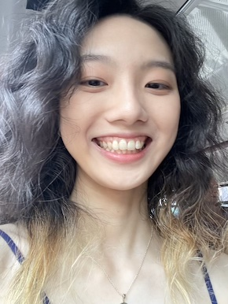
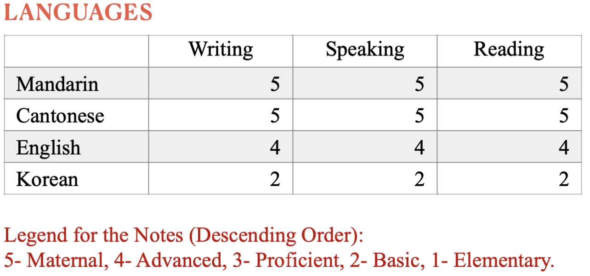

Ziqing Yu

Personal Statement
Ziqing Yu, a collaborative marketing and management graduate of Durham
University, experienced in successfully collaborating with colleagues
across diverse teams to achieve shared goals, both within the academic
sphere and throughout multiple internships. My experiences have instilled
in me a strong commitment to leverage my practical skills in communication
and strategic planning. I am eager to apply these skills in a professional
setting to drive organizational growth and achieve further personal
development.
Experience
-
DONGGUAN AIITEK TECHNOLOGY CO., LTD
2022.10 -- 2023.02 | Position:
E-commerce operation
-
Effectively uploaded and managed a diverse range of products on the
Lazada platform, ensuring accurate listings and inventory
management.
-
Strategically optimized product content pages, utilizing SEO
techniques, and persuasive copywriting to enhance product visibility
and drive customer engagement.
-
Proactively promote selected products and implement effective
sponsor solutions to drive sales growth.
-
Actively participated in engaging livestream activities to promote a
variety of products, showcasing their features, benefits, and
driving audience engagement and interest.
-
Successfully increased the online store's follower base by
approximately 20%, implementing effective livestream marketing
strategies and engaging with the audience to foster brand loyalty
and drive customer acquisition.
-
Skilled in filming and expertly editing high-quality videos that
showcase hot-selling products, instrumental in driving sales growth
through strategic utilization of Lazada feed by edited videos,
effectively increased the click-through rates.
-
Provided exceptional customer service by addressing inquiries,
resolving issues, and offering support to ensure a positive customer
experience.
-
COMPOSITE TECH COMPANY., LTD
2021.07 -- 2021.09 | Position: Foreign procurement intern
-
Actively participated in the goods selection and purchase process,
conducting market research and analysis to identify high-quality
products at competitive prices.
-
Effectively liaised with European suppliers to address quotation and
shipment issues, ensuring smooth communication and timely delivery
of goods.
-
Collaborated closely with suppliers to implement initiatives for
environmentally friendly materials packaging, facilitating the
transition to FSC 100% and FSC Mix certified materials.
-
JIANGMEN HUAXIANG INDUSTRIAL CO., LTD
2020.06 -- 2020.08 |
Position: Logistics department Intern
-
Actively participated in tracking and monitoring bulk cargo orders,
ensuring timely and accurate delivery by coordinating with internal
teams and external stakeholders.
-
Assisted in scheduling and coordinating the distribution of various
product models, optimising logistics operations and minimising
delivery timeframes.
-
Effectively communicated with drivers and customers to ensure smooth
delivery operations, addressing inquiries, resolving issues, and
maintaining high customer satisfaction levels.
Education Background
Durham University
2019.09 -- 2022.06 | Major: Marketing And Management
Main course:
- Marketing principle
- Financial information for managers
- Integrated marketing communication
- Global marketing
- Retail and services marketing
- Strategic management
Software
- Microsoft office software
- SPSS
- HTML
- JavaScript
Languages

Others